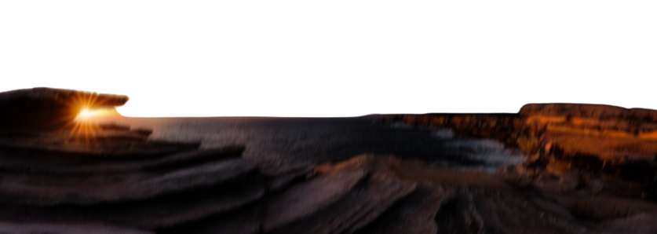
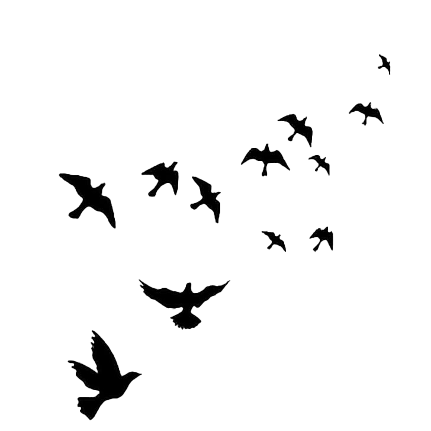
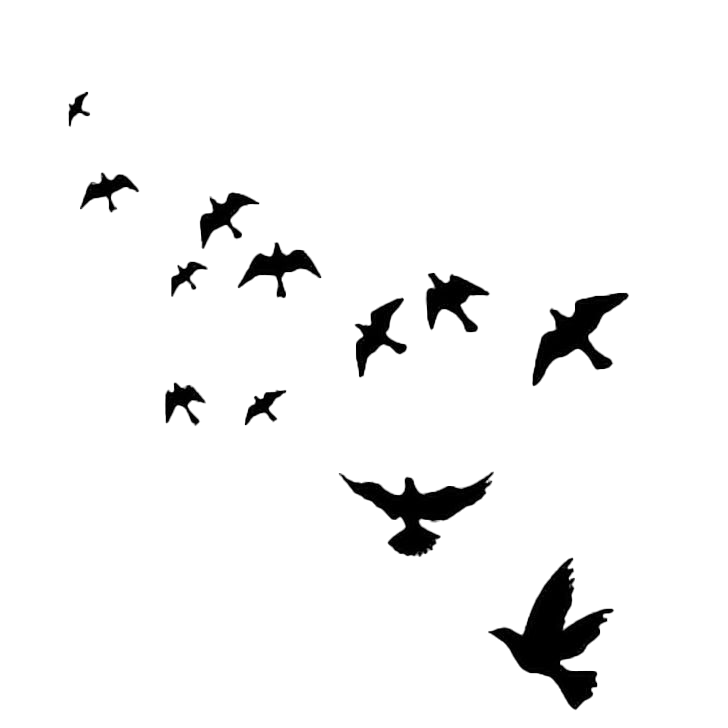
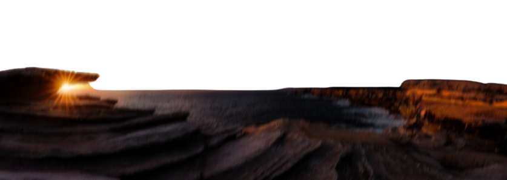
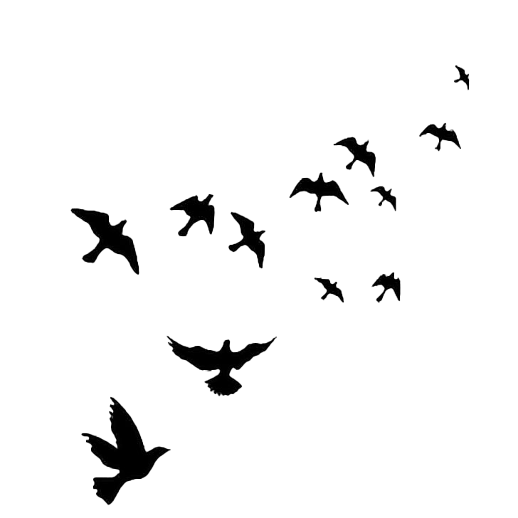
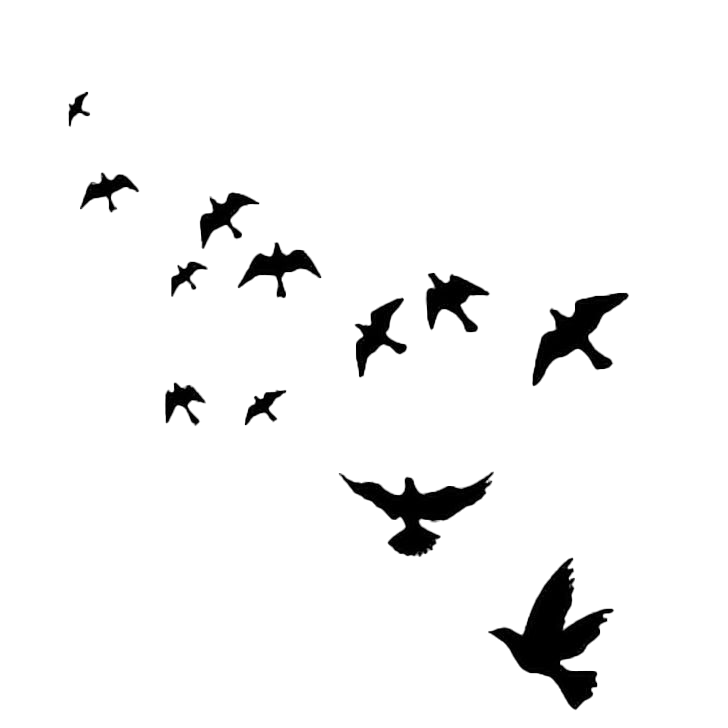

Bienvenue sur mon portfolio ! Je suis Kevin, étudiant en informatique de 18 ans passionné de développement de jeux vidéo et de sites web. Je possède une solide expérience en développement de serveurs Fivem et Garry's Mod en utilisant le langage de programmation LUA. J'ai également des compétences en HTML et CSS pour la création de sites web. Je suis constamment en train de chercher de nouveaux défis pour améliorer mes compétences et mes connaissances en informatique. Je suis motivé pour travailler sur des projets innovants et collaboratifs pour aider les clients à atteindre leurs objectifs. Mon objectif est de fournir un travail de qualité, en respectant les délais et en offrant un service personnalisé à chaque client. Je suis prêt à discuter de vos projets et de vos besoins en informatique pour trouver la meilleure solution pour vous. N'hésitez pas à me contacter pour en savoir plus sur moi et sur mon travail. Je suis impatient de collaborer avec vous pour réaliser des projets passionnants ensemble !

Avec une expérience professionnelle j'ai déjà développé plusieurs serveurs Fivem et Garry's Mod en mode DarkRP, qui ont nécessité une maîtrise approfondie du langage de script Lua pour réussir. J'ai également travaillé avec PHP pour la création de base de données pour les serveurs Fivem, ainsi qu'avec HTML et CSS pour la conception d'interfaces utilisateur et la mise en forme des pages web. En tant que développeur, j'ai toujours cherché à améliorer mes compétences en matière de programmation, de conception et de résolution de problèmes. En somme, mon expérience professionnelle m'a permis de développer une expertise avec quelque bases dans le développement de jeux vidéo et dans la maîtrise des langages de script tels que Lua, PHP, HTML et CSS. Je suis toujours prêt à relever de nouveaux défis et à explorer de nouvelles technologies pour trouver des solutions innovantes aux problèmes les plus complexes.